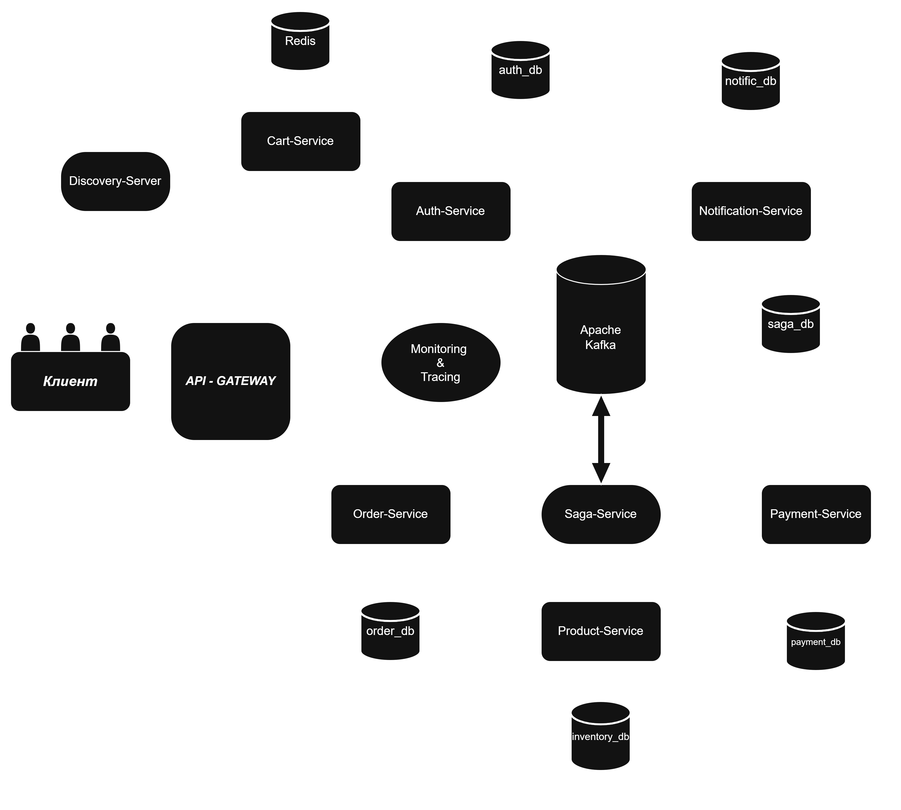

Production-ready платформа: 10 микросервисов, событийная архитектура, высокая доступность и сквозная наблюдаемость.
Выберите компонент для подробностей

Spring Cloud Gateway (WebFlux) · Resilience4j · Bucket4j
API Gateway — это наш Edge Server (пограничный сервер). Он принимает весь входящий трафик, скрывая за собой сложную топологию микросервисов и обеспечивая безопасность.
lb:// позволяет маршрутизировать запросы к нужным инстансам сервисов (Auth, Product, Cart, Order, Payment), не хардкодя IP-адреса. Для каталога настроен механизм Retry (3 попытки) на случай кратковременных сетевых сбоев.JwtAuthGatewayFilter берет на себя роль единого Auth-провайдера. Он извлекает токен из HttpOnly Cookie, валидирует подпись (HS256) и обогащает запрос заголовками X-User-Id, X-User-Email и X-User-Role. Downstream-сервисам больше не нужно парсить токен — они доверяют Gateway.RateLimiterFilter (Bucket4j) отсекает DDoS-атаки и брутфорс, ограничивая 20 запросов в секунду на IP.
AdminApiKeyFilter защищает чувствительные эндпоинты (/api/inv/**, /admin), требуя специальный API-ключ, недоступный обычным клиентам.FallbackController (HTTP 503), предотвращая каскадное падение всей системы.CorrelationIdFilter генерирует уникальный ID для каждого запроса для трассировки в Zipkin. SecurityHeadersFilter защищает браузер клиента, добавляя CSP и X-Frame-Options.Spring Security · JJWT · Redis · PostgreSQL · Kafka
Auth Service — это централизованный Identity Provider (IdP) системы. Он отвечает за безопасность, управление учетными записями и выдачу криптографических токенов для доступа к закрытым ресурсам.
HttpOnly Cookies (защита от XSS). Access-токен (15 мин) и Refresh-токен (7 дней) генерируются по алгоритму HS256. Refresh-токены хранятся в Redis, что позволяет реализовать безопасный Logout (отзыв сессии).BCrypt (с солью). Реализован Account Lockout: при 5 неудачных попытках ввода аккаунт блокируется на 15 минут.@RestControllerAdvice перехватывает ошибки валидации и бизнес-логики, возвращая клиенту структурированный JSON (HTTP 400/409) вместо стандартных 500-х ошибок.jqwik). Качество самих тестов проверяется с помощью мутационного тестирования (PIT).UserRegisteredEvent. Это асинхронно триггерит создание кошелька (Payment) и отправку email (Notification).Spring Data JPA · Redis Cache · PostgreSQL FTS · Hibernate
Product Service — это высоконагруженный сервис каталога. Он спроектирован так, чтобы выдерживать тысячи read-запросов в секунду, минимизируя нагрузку на дисковую подсистему БД за счет грамотного кэширования и оптимизации SQL.
@EntityGraph (fetch-join для категорий). Использован паттерн Soft Delete (через @SQLDelete и @SQLRestriction): при удалении товара запись не стирается физически, а помечается deleted_at, сохраняя ссылочную целостность для истории заказов.OFFSET в пользу пагинации по ключу (createdAt). База данных использует B-Tree индекс, что дает сложность O(log n) и стабильную скорость листания независимо от глубины страницы.tsvector и tsquery. Используется сортировка по релевантности (ts_rank) и создан GIN-индекс, что в разы быстрее, чем LIKE '%...%'.@Cacheable(sync=true) для защиты от Cache Stampede (лавинообразных запросов в БД при истечении TTL) — потоки блокируются, пока один обновляет кэш.Spring Data JPA · Transactional Outbox · Kafka
Order Service — это участник распределенной транзакции (Saga Participant). Его главная задача — создать заказ и гарантировать доставку события OrderCreatedEvent в Kafka, используя паттерн Transactional Outbox для защиты от потери данных (Dual-Write Problem).
IN_PROCESS) в одной транзакции с ним сохраняется запись в таблицу order_outbox (статус PENDING). Метод защищен аннотацией @Transactional(propagation = MANDATORY), что гарантирует вызов только из существующей транзакции и исключает частичное сохранение.@Scheduled(fixedDelay=500)) в отдельной транзакции (REQUIRES_NEW) забирает пачку PENDING-событий, публикует их в Kafka (с гарантией acks=all и enable.idempotence=true) и переводит в статус SENT. Если Kafka недоступна — событие остается в БД и уйдет при следующей попытке.correlationId из MDC. При публикации он прокидывается в заголовки Kafka-сообщения, позволяя отследить путь заказа через Zipkin, даже если сервис перезапустится.saga-service: ConfirmOrderCommand (если оплата и резервация прошли) для смены статуса на CONFIRMED, либо CompensateOrderCommand для отмены (CANCELLED).Pessimistic Locking · Audit Log · Outbox Pattern · Strategy
Payment Service — это финансовое ядро системы, отвечающее за управление кошельками, списание средств и гарантию того, что деньги не спишутся дважды.
@Lock(PESSIMISTIC_WRITE) и SELECT ... FOR UPDATE). Потоки выстраиваются в очередь, что полностью исключает двойное списание или уход баланса в минус.PaymentCommandHandler). Класс PaymentProcessor динамически находит нужный хендлер для конкретной команды (например, AddingFundsToYourAccountCommand), что позволяет легко добавлять новые типы операций без изменения существующего кода.@Transactional(propagation = REQUIRES_NEW), поэтому лог сохраняется, даже если основная транзакция бизнес-логики откатится.payment_outbox происходят атомарно. При ошибке (PaymentFailedEvent) также пишется в Outbox для запуска компенсации в Саге.InsufficientFundsException). Валидаторы вынесены в отдельные компоненты (AddFundsValidator).Kafka · SagaState · Compensations · Saga Outbox
Saga Service — это центральный оркестратор распределенных транзакций. Он решает проблему консистентности данных (Eventual Consistency) без использования блокирующих ACID-транзакций между микросервисами.
STARTED до COMPLETED или FAILED) сохраняется в PostgreSQL. Для защиты от конкурентных изменений статуса используется оптимистичная блокировка (@Version), что гарантирует целостность даже при параллельной обработке.order.event.topic, product.event.topic) и генерирует команды в другие сервисы (например, ReserveProductCommand в saga.products.commands). Это изолирует бизнес-логику: участники саги не знают друг о друге.PaymentFailedEvent и инициирует обратные транзакции. Она отправляет CompensateOrderCommand, чтобы отменить заказ, и CompensateProductReservationCommand, чтобы вернуть товары на склад.SagaOutboxScheduler) публикует команды в Kafka и помечает их как SENT. Если сервис упадет до публикации, команда не потеряется.eventId, correlationId). Это позволяет отсекать дубликаты сообщений (at-least-once delivery) и связывать все логи Саги в Zipkin.Spring Data Redis · Jackson Serialization · TTL
Cart Service — это stateless-микросервис, спроектированный для обработки высокочастотных операций записи. В качестве хранилища данных выбран Redis (In-Memory), что позволяет исключить блокировки строк, характерные для реляционных СУБД.
cart:{userId}. Настроен механизм TTL (Time-To-Live) — 30 дней. Это реализует паттерн автоматической очистки (Garbage Collection) неактивных сессий, предотвращая утечки памяти.ObjectMapper с флагом FAIL_ON_UNKNOWN_PROPERTIES = false. Это критически важно для обратной совместимости: при добавлении новых полей в DTO, старые корзины в кэше не вызовут JsonMappingException.quantity, что защищает корзину от дубликатов позиций (Data Duplication).X-User-Id, проброшенный API Gateway, что гарантирует строгую изоляцию клиентских данных.Spring Mail · Kafka Consumer · Retry & DLT
Notification Service — это асинхронный воркер, отвечающий за коммуникацию с пользователями. Он изолирован от основной бизнес-логики и работает исключительно на чтение событий из Kafka.
user-registered-topic и реагирует на событие UserRegisteredEvent, забирая данные (email, имя) прямо из payload сообщения.DefaultErrorHandler с политикой Retry (3 попытки с интервалом 3 секунды). Если SMTP-сервер недоступен, сервис не теряет сообщение, а пытается отправить его снова.user-registered-topic.DLT. Это защищает партицию от блокировки «ядовитым» сообщением.NotificationLog (статусы: SENDING, SENT, FAILED). Это позволяет отслеживать историю и не отправлять дубликаты при повторной доставке события.Relational Database · Database-per-service · ACID
PostgreSQL — это основная реляционная СУБД проекта. Она обеспечивает надежное хранение структурированных данных и строгое соблюдение принципов ACID (Атомарность, Согласованность, Изолированность, Долговечность).
SELECT FOR UPDATE).@EntityGraph в JPA. Для пагинации используется Keyset-пагинация (по индексу), что в разы быстрее классического OFFSET.tsvector и tsquery с сортировкой по релевантности (ts_rank). Настроены индексы (B-Tree) на внешние ключи (FK) и уникальные поля (UNIQUE).deleted_at) вместо физического удаления, чтобы не ломать историю заказов. Настроена стратегия бэкапов (pg_dump + cron).In-Memory Data Store · Cache-Aside · TTL
Redis — это высокопроизводительное хранилище данных в оперативной памяти (Key-Value). В проекте используется как многофункциональный компонент: для кэширования, хранения сессий и временных данных (корзины).
@Cacheable(sync=true) — потоки блокируются, пока один из них не обновит кэш.cart:{userId}. Благодаря настройке TTL (30 дней), «брошенные» корзины автоматически очищаются, предотвращая утечку памяти. Используется кастомная JSON-сериализация для поддержки эволюции схемы.Spring Cloud Netflix (Eureka) · Service Discovery · Load Balancing
Discovery Server — это централизованный реестр сервисов (Service Registry). Он решает проблему динамической топологии: когда у микросервисов меняются IP-адреса, порты или добавляются новые инстансы, клиентам (например, API Gateway) не нужно об этом знать.
lb://AUTH-SERVICE), а Spring Cloud LoadBalancer распределяет трафик между доступными репликами (Round Robin).Микросервисная архитектура уровня Production
Online Store — это распределенная, событийно-ориентированная (Event-Driven) система, состоящая из 10 независимых микросервисов. Проект спроектирован с упором на отказоустойчивость, безопасность и высокую нагрузку.
Бизнес-логика охватывает полный цикл e-commerce: от регистрации пользователя и работы каталога (с полнотекстовым поиском и кэшированием) до управления корзиной, оформления заказов и проведения платежей с жестким контролем баланса.
Prometheus · Grafana · Zipkin · Micrometer
Observability (Наблюдаемость) — это фундамент надежной системы. Мы не просто собираем логи, мы используем три столпа: метрики, распределенную трассировку и централизованное логирование.
Pull-модель — сам опрашивает эндпоинты /actuator/prometheus раз в 15 секунд и хранит их в виде Time-Series.TraceId и SpanId. Они передаются через HTTP-заголовки (traceparent) и Kafka. Zipkin собирает эти спаны в единое дерево, показывая, на каком именно шаге (в БД, сети или логике сервиса) возникла задержка.X-Correlation-Id прокидывается от Gateway до БД (включая таблицы Outbox), что позволяет найти все логи одного запроса в Kibana.Event Bus · Reliability · Consumer Groups · DLT
Apache Kafka — это центральная событийная шина (Event Bus). Она обеспечивает асинхронное взаимодействие микросервисов, позволяя им оставаться слабо связанными (Loose Coupling).
OrderId). Это гарантирует, что все события по одному заказу попадут в одну партицию и будут обработаны строго по порядку.acks=all (подтверждение от всех реплик), идемпотентность (enable.idempotence=true) для защиты от дублей при ретраях и max.in.flight.requests=5 для сохранения порядка.delivery.timeout.ms=60000 и retry.backoff.ms=500. Для повышения пропускной способности используется linger.ms=100, батчи по 16KB и сжатие snappy.groupId. Если запустить несколько инстансов одного сервиса, Kafka автоматически распределит партиции между ними (Rebalancing). Параметр concurrency=3 позволяет обрабатывать до 3 партиций параллельно в одном инстансе.spring.json.trusted.packages) и ErrorHandlingDeserializer. При фатальных ошибках сообщение уходит в Dead Letter Topic (DLT), не блокируя партицию.observationEnabled=true, что позволяет Micrometer Tracing прокидывать TraceId через Kafka-сообщения и связывать их в Zipkin.JUnit 5 · Testcontainers · jqwik · PIT · Gatling
Стратегия тестирования построена по классической пирамиде. Для контроля качества используются метрики покрытия (JaCoCo). Покрытие ключевой бизнес-логики (UserService) составляет 82%.
Полезные ссылки